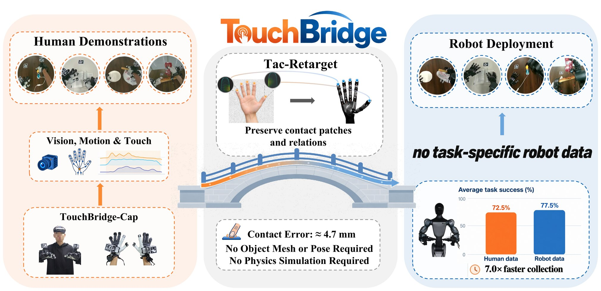
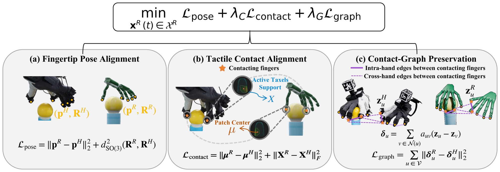
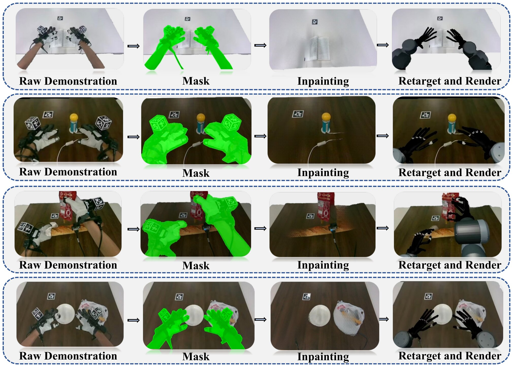
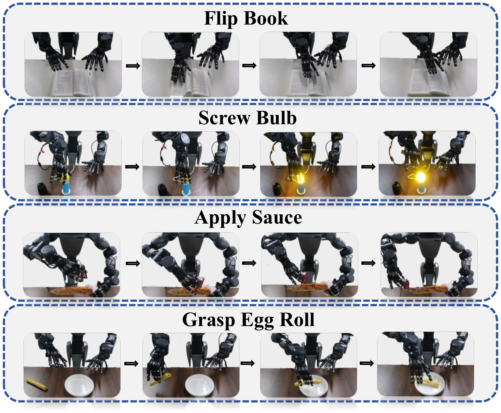
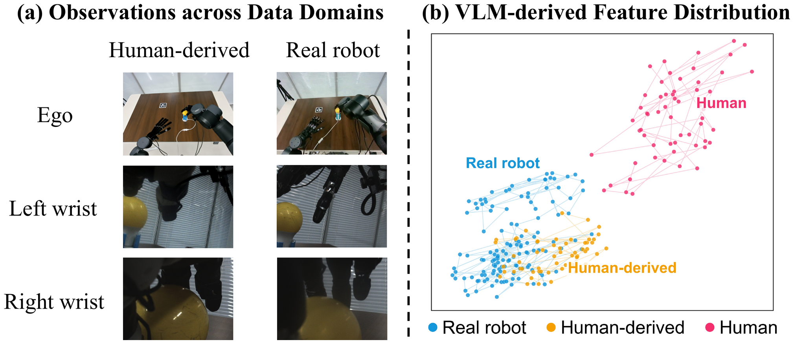
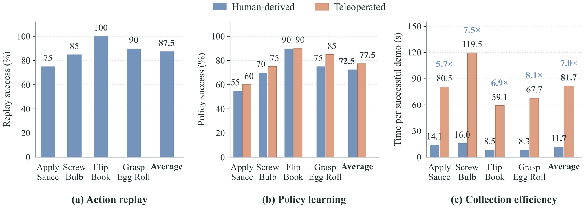
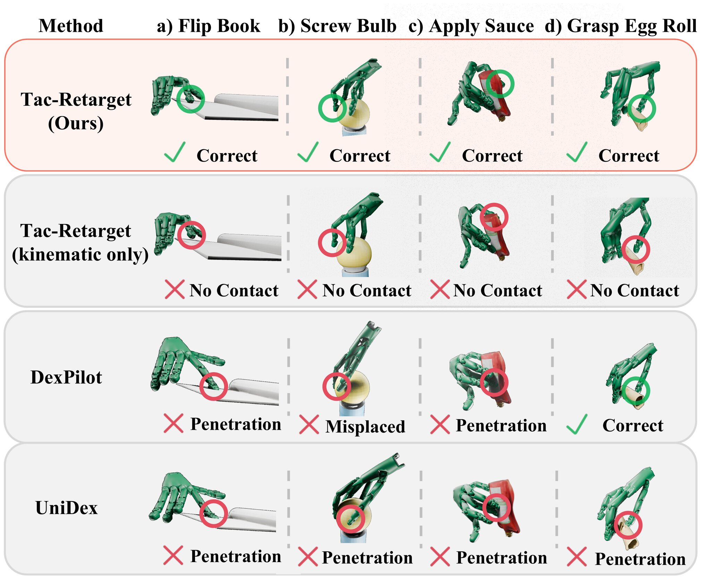
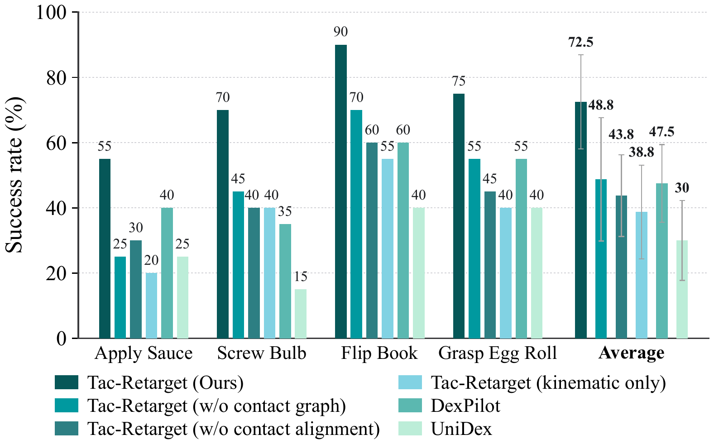
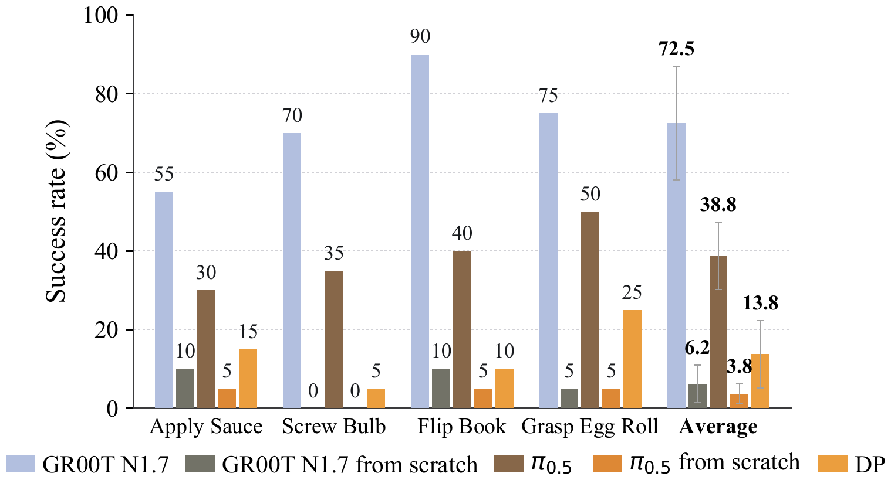

Overview
Teaching dexterous robots with human touch
Human demonstrations are a fast and scalable source of data for dexterous manipulation — but differences in hand shape and sensing make it hard to transfer contact-rich interactions to a robot. TouchBridge uses fingertip touch as the bridge between the two embodiments.
TouchBridge is a hardware–software co-designed framework for human-to-robot data transformation. A wearable capture interface, TouchBridge-Cap, and a matching robot interface share the same wrist-camera viewpoint and fingertip tactile layout. On top of this correspondence, Tac-Retarget uses the measured contact to align fingertip contact patches and preserve their spatial relations within and across hands — with no object mesh, no object-pose estimate and no physics simulation. Combined with visual synthesis and camera-anchored action conversion, TouchBridge turns raw human demonstrations into robot-domain data for fine-tuning a pretrained vision-language-action (VLA) model.

(vs. 77.5% teleop)
collection
(+42.5 over UniDex)
(lowest)
1 · Motivation
Why touch?
Building foundation models for contact-rich dexterous manipulation requires large amounts of demonstrations that capture not only hand motion, but also physical interaction. Collecting them on real robots through teleoperation is slow and labor-intensive. Human demonstrations are far cheaper — yet turning them into robot-executable training data faces two challenges.
1.1 Kinematics alone does not preserve contact
Conventional retargeting matches hand poses, fingertip positions or hand-centric vectors. This works for free-space motion, but it does not explicitly model contact: a fingertip may slide off its support region, relations among simultaneous contacts can be distorted, or contact may be lost altogether. A motion that looks kinematically plausible can still be physically useless.
1.2 Physical fidelity should not cost scalability
Object-aware pipelines bring in hand–object geometry or physics, and other approaches refine trajectories with simulation and reinforcement learning. They improve physical consistency, but need object meshes, pose estimation, environment reconstruction or simulated rollouts — overhead that is hard to scale to large, diverse human datasets.
1.3 Our key insight
Physical contact itself provides a natural correspondence across embodiments.
Tactile sensing directly tells us which fingertips are in contact, where contact occurs and how strongly each region is loaded. Because these signals are measured during the human demonstration, they provide interaction constraints without reconstructing the object or running a simulator — addressing both challenges at once.
1.4 Comparison with prior frameworks
| Method | High-DoF Hands | Sim-Free | No Object Pose / Geom. | Robot-Free Fine-Tuning |
|---|---|---|---|---|
| TouchBridge (ours) | ✓ | ✓ | ✓ | ✓ |
| AINA | ✗ | ✓ | ✗ | ✓ |
| HumanEgo | ✗ | ✓ | ✗ | ✓ |
| DexUMI | ✗ | ✓ | ✓ | ✓ |
| ManipTrans | ✓ | ✗ | ✗ | ✓ |
| TopoRetarget | ✓ | ✗ | ✗ | ✓ |
| RoboPaint | – | ✗ | ✗ | ✓ |
| SPIDER | ✓ | ✗ | ✗ | ✓ |
| C2Dex | – | ✗ | ✗ | – |
| MotionTrans | – | ✓ | ✓ | ✗ |
| EgoMimic | ✗ | ✓ | ✓ | ✗ |
2 · Method
How TouchBridge works
TouchBridge has three parts: a hardware co-design that aligns what the human and the robot see and feel, Tac-Retarget that transfers motion while preserving contact, and a data transformation pipeline that produces robot-domain observations and actions.
2.1 Human–robot vision and tactile system
TouchBridge-Cap is a wearable interface that records an egocentric RGB stream (Intel RealSense D455), two wrist-view RGB streams, articulated hand kinematics from a pair of Manus gloves, and distributed contact from a PaXini Hall-effect tactile array on every fingertip. AprilTag fiducials near the wrists are localized in the egocentric video to bring the glove-estimated fingertip poses into the camera frame.
The robot — a bimanual platform with two 20-DoF Wuji Hands — carries the same sensors: an egocentric camera, wrist cameras mounted at matching viewpoints, and five PaXini sensors per hand at corresponding fingertip locations. This gives aligned wrist views and fingertip-local tactile signals across embodiments.


Hover over the images to zoom in on details.
Stable hand tracking. External trackers such as the HTC Vive Tracker rely on a clear line of sight to base stations, which is easily blocked during close-range, bimanual manipulation. These problems become most pronounced when the hand moves quickly or the wrist rotates/flips — exactly the motions that contact-rich tasks such as screwing a bulb or turning a page require — and show up as tracking loss, sudden pose jumps and latency between the tracker and the camera stream. TouchBridge-Cap avoids these issues by localizing multi-face AprilTag cubes directly in the egocentric video: the multi-face design keeps a tag visible across a wide range of wrist orientations, and because hand poses are estimated from the very frames the policy observes, they are inherently time-synchronized with the images — no separate tracking system to calibrate or align.
2.2 Tac-Retarget: tactile-conditioned retargeting
Given the human fingertip poses and synchronized tactile measurements at each time step, Tac-Retarget solves for both robot hand-base poses and joint configurations:
No object mesh or object-pose estimate ever enters the optimization. The three main terms are:
- Fingertip pose alignment tracks demonstrated fingertip positions and orientations in the camera frame, with contact-conditioned weights. The hand-base poses stay free variables instead of copying the human wrist.
- Tactile contact alignment computes a response-weighted contact center on each contacting fingertip and matches both this patch center and the distribution of active taxels between human and robot.
- Contact-graph preservation builds a tactile-activated graph with intra-hand and cross-hand edges between contacting fingertips, and matches weighted relative offsets so that the spatial relations among simultaneous contacts are kept.

2.3 Human-to-robot data transformation
Observation synthesis. Wrist views are kept as-is thanks to the matched mounts; the egocentric view is converted to the robot domain. SAM 2 segments the human hands and wearable hardware, ProPainter inpaints the masked regions, and the retargeted robot hands are rendered back with calibrated intrinsics and depth-aware occlusion.
Camera-anchored actions. Following UMI, arm actions are expressed as end-effector poses relative to the start of each action chunk, using a static scene AprilTag to compensate for head-camera motion. Hand actions are absolute joint targets from Tac-Retarget.

3 · Experiments
Does it work on a real robot?
We evaluate TouchBridge with data analyses and real-robot experiments around four questions:
- How close are our human-derived robot demonstrations to real robot data, in both observations and actions?
- Can policies trained only on human-derived data match policies trained on teleoperated robot data?
- How does Tac-Retarget compare with existing simulation-free retargeting methods, and what do its tactile parts contribute?
- How does policy pretraining affect learning from human-derived data?
3.1 Setup and tasks
All experiments run on a Moz1 bimanual robot with two Wuji Hands. We study four contact-rich tasks: Flip Book (turn one page with the index finger), Screw Bulb (screw a bulb in until it lights up), Apply Sauce (hold a baguette and squeeze ketchup along it) and Grasp Egg Roll (pick up a fragile egg roll without breaking it). For each task we collect 60 human and 60 teleoperated robot demonstrations; tactile signals are used only for retargeting, not as policy input. Each policy is evaluated over 20 real-world trials.

3.2 Quality of human-derived demonstrations
Visual similarity. We feed multi-view observations into the VLM backbone of GR00T N1.7 and look at the features before the action expert. Human-derived robot observations overlap strongly with real-robot ones, while raw human observations are clearly separated — the transformation closes most of the visual gap.

Action replay. Replaying 20 converted demonstrations per task on the robot under matched initial scenes succeeds 87.5% of the time on average.
3.3 Human-derived vs. teleoperated robot data
We fine-tune GR00T N1.7 on 60 human-derived or 60 teleoperated demonstrations per task with identical settings. Policies trained only on human-derived data reach 72.5% average success versus 77.5% with teleoperated data — equal on Flip Book and within ten points on every other task. Meanwhile, a successful human demonstration takes 11.7 s on average compared with 81.7 s for teleoperation, a 7.0× speedup.

3.4 Tac-Retarget vs. kinematic retargeting
Contact preservation. We replay retargeted Grasp Egg Roll trajectories in Isaac Sim with a reconstructed object mesh and measure the distance between the human tactile contact center and the simulated one. Tac-Retarget gives the lowest error; removing either tactile component increases it.
| Method | Contact error (mm) ↓ |
|---|---|
| Tac-Retarget (ours) | 4.667 |
| DexPilot | 6.354 |
| UniDex | 7.715 |
| Tac-Retarget w/o contact graph | 6.659 |
| Tac-Retarget w/o contact alignment | 7.071 |
| Tac-Retarget (kinematic only) | 7.540 |

Downstream policy performance. Converting the same 60 human demonstrations per task with each method and fine-tuning GR00T N1.7, Tac-Retarget is best on all four tasks with 72.5% average success, +25.0 points over DexPilot and +42.5 over UniDex. Dropping either tactile component lowers success, with the largest drop when both are removed.

3.5 Effect of policy pretraining
With the same 60 converted demonstrations per task, pretrained GR00T N1.7 and π0.5 reach 72.5% and 38.8%, while their from-scratch versions reach only 6.2% and 3.8%; Diffusion Policy reaches 13.8%. Pretraining matters a lot when learning from a limited set of human-derived demonstrations.

4 · Conclusion
Takeaways
TouchBridge is a hardware–software co-designed framework for learning contact-rich dexterous manipulation without task-specific robot demonstrations. TouchBridge-Cap makes human data collection fast, and Tac-Retarget transfers motion while preserving contact — producing robot-domain data without object meshes, object-pose estimates or simulation-based refinement. With 7.0× faster collection and policy success close to that obtained from robot-collected data, we hope TouchBridge offers a practical path to scale robot learning from human demonstrations.